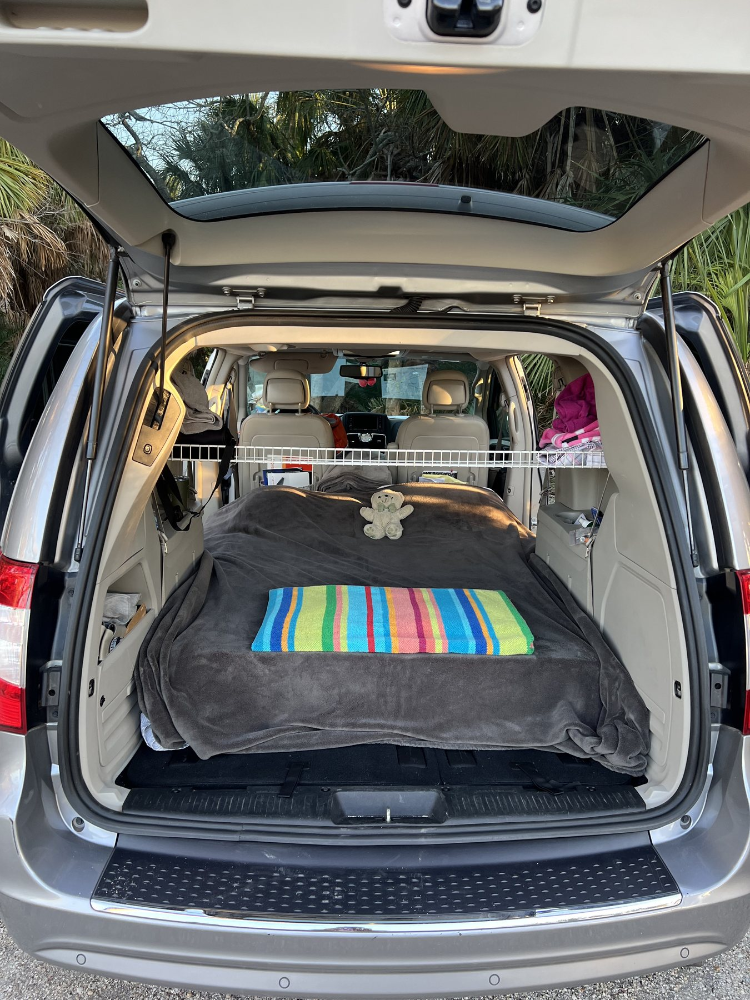

Mosquitogeddon
Hundreds of mosquitoes filled Ivan on our second night. David wanted to return home; Cassie insisted we continue.

Field Note · Summer 2023
At the time, it could not have been greater—or grander.
The route
The scale of it
One homemade minivan camper. No small plans.
The journey
We built a full-size sleeping platform inside Ivan and attempted our first enormous vehicle-based loop. The route carried us from Cincinnati across New Mexico and Four Corners, through Colorado, Yellowstone and Glacier, then into the Dakotas before returning home.
Reservations gave the trip enough structure to reach places such as Glacier, but we also learned to change course. The best example came after we initially declined Steve Bodi’s invitation to visit a dinosaur excavation near Baker. We reconsidered, added an entire week, visited Theodore Roosevelt National Park and Devils Tower, and returned to help excavate and prepare parts of a Triceratops.
The turning point
The Great Western Loop proved that Ivan’s homemade sleeping system worked.
We could sleep in a minivan for consecutive weeks, use campgrounds confidently, eat from a cooler, decide when cooking was worthwhile, maintain hygiene, manage our belongings and protect ourselves from changing weather. We recovered from extreme heat, Mosquitogeddon, altitude problems, a dead battery, rough roads and a damaged windshield.
The first two nights nearly sent us home. By the end, there was no doubt Ivan would travel again. We had stopped experimenting with whether minivan travel was possible and started planning how to make the next expedition longer and better.
Five snapshots
The moments that tested the idea, changed the route and turned Ivan into a character in our travel story.

Hundreds of mosquitoes filled Ivan on our second night. David wanted to return home; Cassie insisted we continue.
A long washboard road and an otherworldly landscape showed us both Ivan’s reach and its limitations. Photographing the vehicle became part of our travel language.

High altitude taught us hard lessons about hydration, food and alcohol. A reflection-day photo shoot helped turn Ivan into a recurring character in our visual story.
We crossed Going-to-the-Sun Road repeatedly in changing light, explored from Logan Pass and saw our first glaciers. Glacier became a favorite and made Banff and Jasper feel inevitable.
We added a week, doubled back and helped Steve Bodi excavate and protect parts of a Triceratops. It became the clearest example of choosing an extraordinary detour over the original schedule.
What came home with us
We returned knowing more travels were coming. Ivan’s sleeping system was a home run, and we had learned how to live comfortably from a cooler, a campground and the back of a minivan. We found upgrade opportunities and started planning. More importantly, we knew we were resilient and ready for adventure.